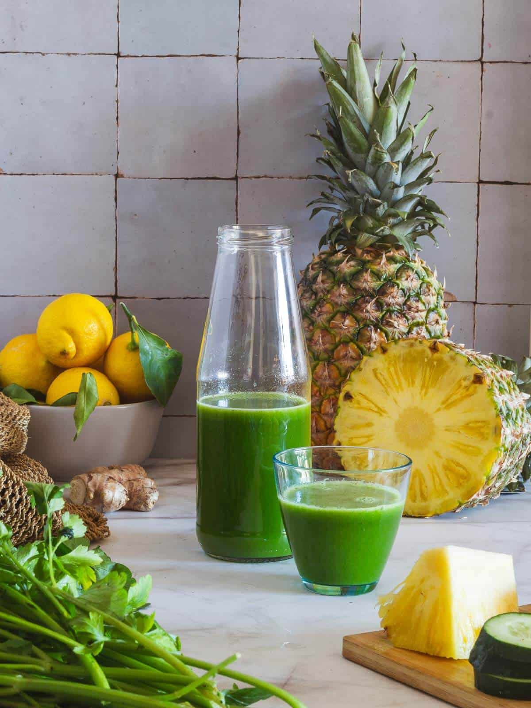

Weightloss Drink

This drink helps to reduce belly fat
Drink twice a day (morning & night) for 2 weeks for best results.
Ingredients
- 2 cups of water
- 1/2 squeezed lemon
- 1 cup pineapples
- 1 cup cucumbers
- ginger
- chia seeds
Steps
- Cut up pineapples and cucumbers and add it to a blender
- Add a piece of ginger to the blender
- Pour 2 cups of water in the blender
- Sqeeze a half of a lemon and add chia seeds
- Finally blend your inegredients and enjoy!